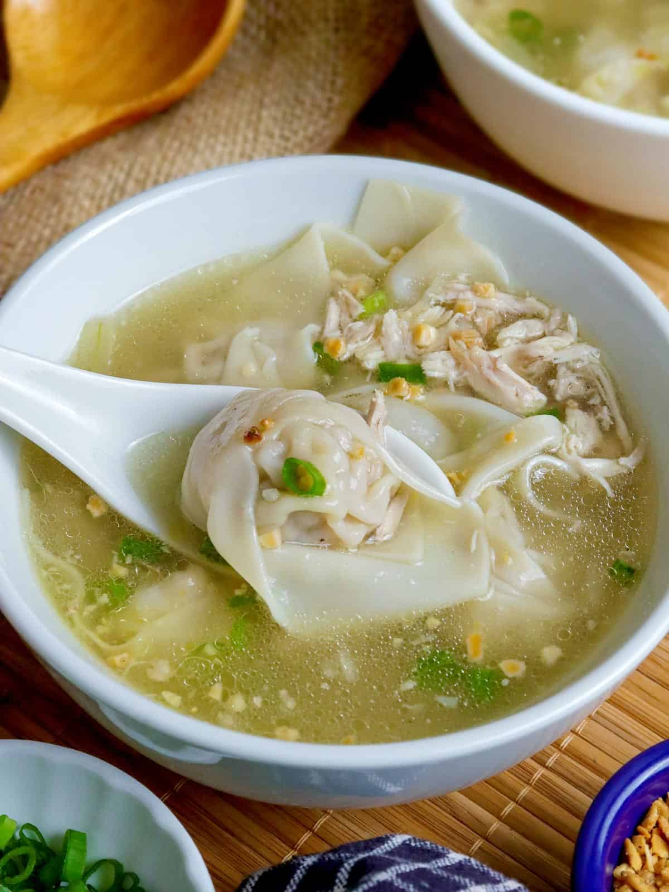

Pansit Molo

Description
Pancit Molo is a Filipino dish that originates from the Molo district in Iloilo City, Philippines. It is a type of dumpling soup characterized by its flavorful broth
and delicate dumplings filled with minced meat (usually pork or chicken) and various seasonings.
Ingredients
Wonton
- 1 1/2 lbs. ground pork
- 15 pieces medium shrimp shell removed and deveined
- 30 to 35 pieces wrapper wonton
- medium yellow onion minced
- 1/2 teaspoon garlic powder
- 1/2 teaspoon sesame oil
- 1 egg
- 1 teaspoon salt
- 1/8 teaspoon ground black pepper
Soup
- 1/2 rotisserie chicken
- 48 oz. chicken broth
- 3 cups water
- 1/2 cup chopped scallions
- 1/4 cup toasted garlic
- 2 to 3 tablespoons fish sauce
Steps
- Start to prepare the wonton by chopping the shrimp into small pieces and put it in a mixing bowl.
- Add ground pork, onion, sesame oil, egg, salt, garlic powder, and pepper. Mix well.
- Lay a piece of wonton wrapper flat on a plate. Scoop 1 1/2 teaspoon of the mixture and place on the middle of the wrapper. Fold the wonton wrapper to form a triangle. Press the sides to keep the meat mixture intact. Gold both sides of the triangle wrapper inward. Set aside. Do this step until the pork mixture is completely consumed.
- Make the soup by combining water and chicken broth in a soup pot. Let boil.
- Add the rotisserie chicken (with bones). Cover and boil in low heat for 20 minutes. Turn the heat off temporarily.
- Remove the chicken and let it cool down. Separate the meat from the bones. Shred the meat.
- Turn the heat back on and wait until the liquid reboils. Add the shredded chicken meat.
- Put the wontons in the soup pot. Cover and cook for 5 to 10 minutes in low to medium heat.
- Add the fish sauce and half of the chopped scallions. Stir.
- Transfer to a serving plate. Top with toasted garlic and additional scallions.
- Serve. Share and enjoy!